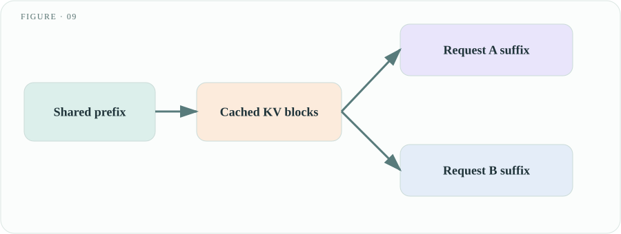

上一章结尾提到了前缀缓存。这一章是真正的"省钱利器"——在 RAG 和多轮对话场景中，Prefix Caching 可以减少重复前缀的 prefill 计算；实际收益取决于可复用 token 数、请求路由和负载分布。

INTERACTIVE LAB
相同前缀能省下多少重复 Prefill？
演示只比较 token 前缀是否完全匹配；真实缓存命中还受 hash、block boundary、模型和运行时配置影响。
请求 A 需要计算 1056 tokens；缓存尚未建立。
9.1 什么场景适合 Prefix Caching
场景 1 — RAG 应用:
请求 A: [System Prompt "你是客服助手..." 1000 tokens] + "退货流程是什么？"
请求 B: [System Prompt "你是客服助手..." 1000 tokens] + "怎么查询物流？"
请求 C: [System Prompt "你是客服助手..." 1000 tokens] + "支持哪些支付方式？"
→ 1000 token 的 system prompt 算了 3 遍 ← 浪费！
场景 2 — Few-Shot 批量评估:
请求 A: [10个示例 2000 tokens] + "测试题1..."
请求 B: [10个示例 2000 tokens] + "测试题2..."
请求 C: [10个示例 2000 tokens] + "测试题3..."
→ 2000 token 的示例算了 3 遍 ← 浪费！
场景 3 — 多轮对话:
Round 1: "推荐北京三日游" → KV Cache 存下
Round 2: Round1上下文 + "第二天去哪吃？" → 复用 Round1 的 KV Cache！
9.2 V1 的零开销实现
Prefix Caching 复用已有 KV Cache blocks，避免再次计算完全匹配的前缀；其实现涉及 block hash、引用关系与缓存回收：
# V0 (旧方案): 有数据拷贝
cached_kv = prefix_cache.lookup(prefix_hash)
if cached_kv:
copy_kv_to_request(cached_kv, request) # 显存拷贝，耗时
# V1 (新方案): 纯指针
cached_blocks = prefix_cache.lookup(prefix_hash)
if cached_blocks:
request.block_table = cached_blocks # 只改指针，零开销
# 不用 copies 数据！新请求的 Block Table 直接指向已缓存的物理 Block这个改进让 CPU 开销降低了 90%，单台机器可以管理的缓存从几千个 block 变成几十万个。
9.3 命中率与实际收益
| 应用场景 | 典型命中率 | 成本节约 | 推荐度 |
|---|---|---|---|
| RAG（固定 system prompt） | 60-90% | 50-80% | ⭐⭐⭐ |
| 多轮对话 | 40-70% | 30-50% | ⭐⭐⭐ |
| 批量评估（共享 few-shot） | 80-95% | 60-85% | ⭐⭐⭐ |
| 单次随机问答 | 0-10% | 0-5% | ⭐ |
| 代码补全 | 15-30% | 10-20% | ⭐⭐ |
经验之谈：RAG 应用如果不开启 prefix caching，等于在烧钱。我见过一个团队的 RAG 服务，开启 prefix caching 后 GPU 成本从 $8/hr 降到 $2/hr——因为 80% 的 prompt tokens 是共享的 system prompt。
9.4 如何启用和验证
# 启动时加一个参数
vllm serve my-model --enable-prefix-caching
# 观察日志
# INFO: Prefix caching enabled
# INFO: GPU KV cache size: 643,232 tokens
# INFO: Prefix cache hit rate: 74.2% ← 这个数字说明省钱效果
# 通过 API 查询（需要 enable 统计）
curl http://localhost:8000/v1/metrics | grep prefix_cache9.5 什么时候 Prefix Caching 不工作
不是所有场景都能受益。以下情况缓存几乎没用：
- 每个请求的 prompt 都是独特的（如开放式问答）
- prompt 很短（缓存节省的 token 数不够看）
- 数据并行模式下（每个 engine 有自己的 cache，请求被随机路由）
注意：生产栈（Kubernetes）中如果启用了前缀感知路由（prefix-aware routing），同一个前缀的请求会自动路由到同一个 vLLM 实例，最大化缓存命中率。如果没有这个路由层，随机分发会导致缓存效率极低。
9.6 SGLang RadixAttention 对比
SGLang 的 RadixAttention 是 Prefix Caching 的进阶版：用 Radix Tree（基数树/压缩前缀树）管理缓存，不仅缓存完全匹配的前缀，还能自动共享部分重叠的前缀：
请求 A: "你是客服助手。退货流程是什么？"
请求 B: "你是客服助手。物流怎么查？"
请求 C: "你是销售顾问。产品价格多少？"
vLLM Prefix Cache: B 复用 A 的前缀 ✓; C 完全不一样 ✗
SGLang Radix: B 复用 A 的前缀 ✓; C 也能部分复用（相同的 token 前缀 "你是"）✓
但 RaxidAttention 只适合前缀高度重叠的场景，通用场景下和 vLLM 差别不大。好了，Prefix Caching 搞清楚了。下一章咱们看 vLLM 的调度器——当几百个请求同时涌来，谁先谁后？GPU 资源怎么公平分配？
参考资料与证据
- Automatic Prefix CachingIntroduction；Enabling APC
- Prefix Caching 设计Hashing；Block sharing